File e cartelle in Windows
Ogni documento, foto o video sul computer è un file, e ogni file sta in una cartella. In questa guida impari a orientarti tra unità, cartelle e percorsi, a usare Esplora file, a dare nomi corretti ai file, a copiarli, spostarli, salvarli e comprimerli. Alla fine metti tutto in pratica con un laboratorio che si corregge da solo.
Ti servono le scorciatoie Ctrl+C Ctrl+X Ctrl+V Ctrl+Z e ⊞+E: se non le conosci, ripassale nella guida La Tastiera Windows. Poi scarica la cartella di esempio qui sotto: la useremo in tutte le sezioni.
File, cartelle e unità
Immagina l'armadio di una segreteria. L'armadio contiene dei raccoglitori, ogni raccoglitore contiene dei fogli, e a volte dentro un raccoglitore ce n'è un altro più piccolo. Il computer organizza i dati allo stesso modo.
Unità = l'armadio
Il disco dove sono memorizzati i dati. Ogni unità ha una lettera seguita da due punti: C:, D:…
Cartella = il raccoglitore
Un contenitore con un nome. Può contenere file e anche altre cartelle, chiamate sottocartelle.
File = il foglio
L'insieme di dati vero e proprio: un documento, una foto, una canzone, un programma. Ogni file ha un nome e un'estensione.
Le unità del tuo computer
Apri Esplora file (⊞+E) e clicca Questo PC nel riquadro a sinistra: vedi le unità collegate e quanto spazio libero resta su ciascuna.
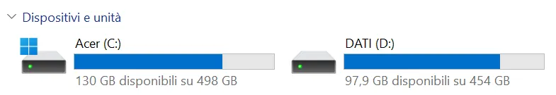
Questo PC: due unità, C: e D:, con lo spazio disponibile
| Unità | Cos'è di solito |
|---|---|
C: | Il disco principale del computer, dove si trova Windows. C'è sempre. |
D:, E:… | Un secondo disco, oppure un dispositivo collegato: una chiavetta USB, un disco esterno, un lettore di schede. |
| OneDrive, Rete | Spazi che non sono dentro il computer: il cloud di Microsoft o le cartelle condivise della scuola. |
Le lettere A: e B: erano riservate ai vecchi floppy disk. Quando sono arrivati i dischi fissi hanno preso la prima lettera libera, la C, e la tradizione è rimasta.
L'albero e il percorso
Cartelle dentro cartelle formano una struttura ad albero rovesciato: in cima c'è l'unità (la radice), da cui partono i rami. Una cartella che ne contiene un'altra si chiama cartella padre; quella contenuta è la cartella figlia.
Il percorso è l'indirizzo completo di un file: parte dall'unità e attraversa tutte le cartelle, separate dal simbolo \ (barra rovesciata, backslash).
Esempio: il percorso D:\Esempio_Viaggi\MEDIA\spot.mp4 si legge "nell'unità D, dentro la cartella Esempio_Viaggi, dentro la cartella MEDIA, c'è il file spot.mp4".
Nella barra degli indirizzi Esplora file mostra il percorso a "gradini": Questo PC › DATI (D:) › Esempio_Viaggi › MEDIA. Se ci clicchi sopra, compare il percorso completo in testo: D:\Esempio_Viaggi\MEDIA. Sono la stessa cosa.
Muoversi tra le cartelle
| Per… | Fai così |
|---|---|
| Entrare in una cartella | Doppio clic sulla cartella |
| Salire alla cartella padre | Freccia ↑ accanto alla barra degli indirizzi, oppure Alt+↑ |
| Tornare alla cartella di prima | Freccia ←, oppure Backspace / Alt+← |
| Saltare a un livello qualsiasi | Clic su un gradino della barra degli indirizzi |
La freccia ← ti riporta alla cartella che stavi guardando prima, qualunque fosse. La freccia ↑ ti porta sempre alla cartella che contiene quella attuale. Spesso coincidono, ma non sempre.
Negli esempi di questa guida la cartella si trova sull'unità D:. Sul tuo computer probabilmente la metterai su C:, in Documenti o sul Desktop: il ragionamento è identico.
Esplora file
Si apre con ⊞+E oppure con l'icona della cartella gialla sulla barra delle applicazioni. Clicca i numeri sull'immagine per scoprire a cosa serve ogni parte.
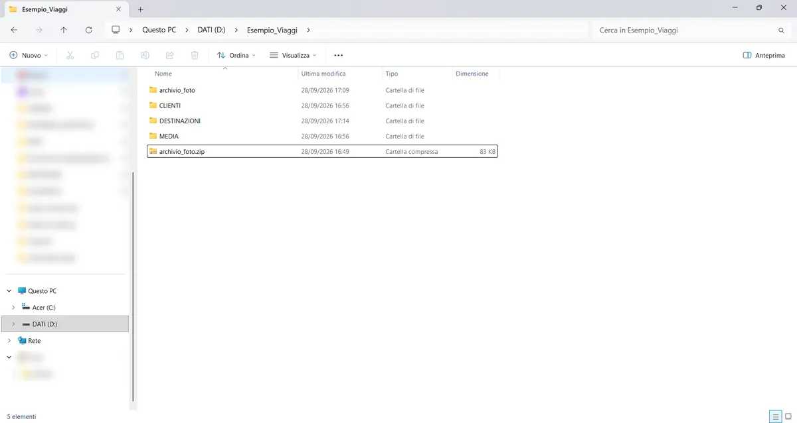
Cambiare visualizzazione
Dal pulsante Visualizza scegli come mostrare il contenuto della cartella. Le tre viste più utili:
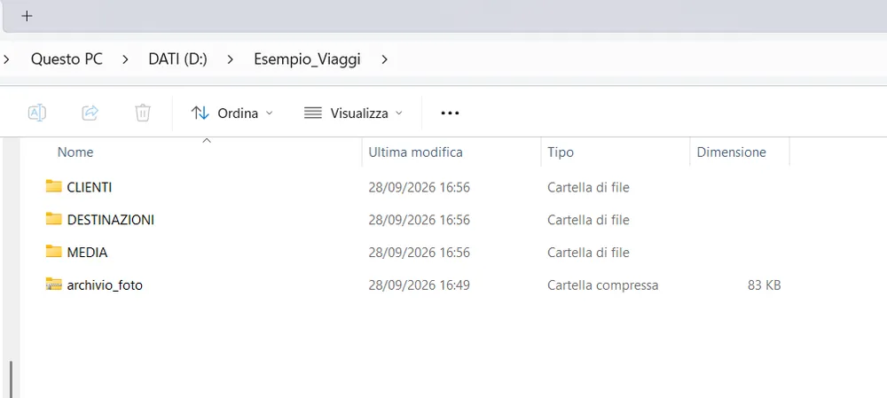
Dettagli: la più utile per lavorare. Mostra data, tipo e dimensione di ogni file
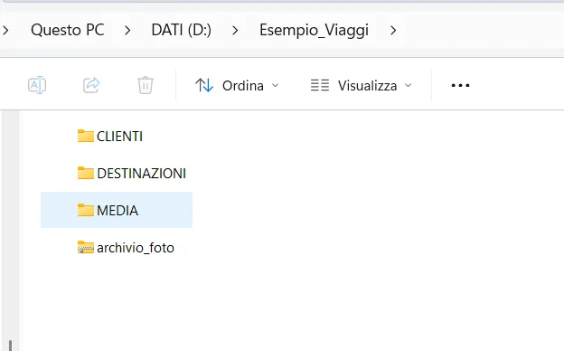
Elenco: solo nomi e piccole icone, compatta
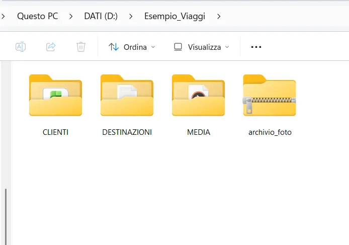
Icone grandi: comoda per le foto, perché mostra le anteprime
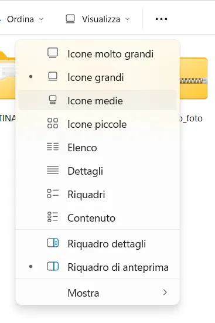
Il menu Visualizza
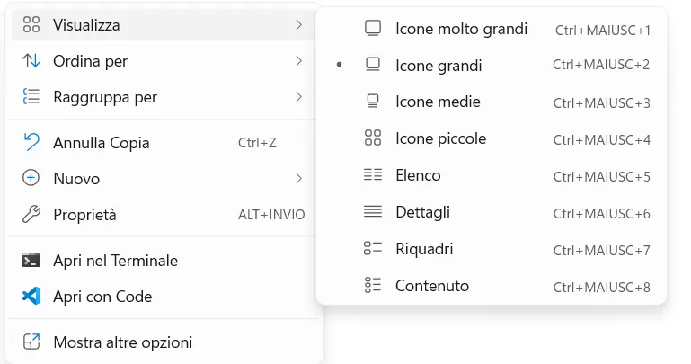
Stesso menu dal tasto destro, con le scorciatoie Ctrl+Maiusc+1…8
La prima cosa da fare: mostrare le estensioni
Windows, all'inizio, nasconde la parte finale del nome dei file (l'estensione, che vediamo nella prossima sezione). Per lavorare bene devi vederla sempre. Si attiva una volta sola:
- Clicca Visualizza → Mostra.
- Clicca Estensioni nomi file: compare il segno di spunta ✓.
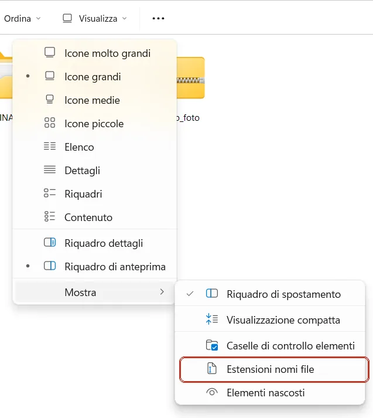
Prima: accanto a Estensioni nomi file non c'è la spunta
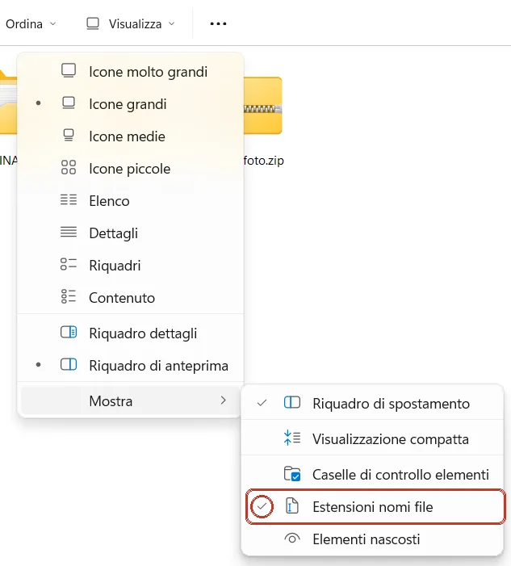
Dopo: compare la spunta ✓ (cerchiata in rosso)
L'impostazione vale solo per il computer su cui la attivi: controllala sul PC di scuola e su quello di casa.
Nomi ed estensioni
Il nome completo di un file è fatto di due parti separate da un punto:
L'estensione serve soprattutto al sistema operativo: da lì Windows capisce che tipo di file è e con quale programma aprirlo quando fai doppio clic. Per questo le icone cambiano da un tipo all'altro.
Le estensioni non le inventa l'utente: le stabilisce chi crea il programma o il formato. Microsoft, per esempio, ha deciso che i documenti di Word si chiamano .docx. Quando installi un programma, questo "registra" le sue estensioni in Windows: da quel momento i file di quel tipo si aprono con lui.
Nella stessa cartella non possono esistere due file con lo stesso nome completo. Possono però convivere archivio_foto.docx, archivio_foto.txt e archivio_foto.zip: il nome completo include l'estensione, quindi per Windows sono tre file diversi, di tre tipi diversi. Con le estensioni nascoste l'unico indizio è l'icona, facile da confondere: per questo mostrare le estensioni è una buona pratica da adottare sempre.
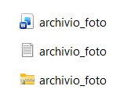
Estensioni nascoste: tre file "uguali"
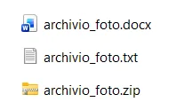
Estensioni visibili: .docx, .txt, .zip
| Estensione | Tipo di file | Si apre con |
|---|---|---|
.txt | Testo semplice, senza formattazione | Blocco note |
.docx | Documento di testo formattato | Word, LibreOffice Writer |
.xlsx | Foglio di calcolo | Excel, LibreOffice Calc |
.pptx | Presentazione | PowerPoint, LibreOffice Impress |
.pdf | Documento da leggere o stampare | Browser, Acrobat Reader |
.jpg .png | Immagine | Foto, Paint |
.mp3 | Audio | Lettore multimediale |
.mp4 | Video | Lettore multimediale |
.zip | Archivio compresso che contiene altri file | Esplora file (vedi sezione 7) |
.exe | Programma: se lo apri, esegue istruzioni | Windows stesso — attenzione a quelli ricevuti per email! |
Con e senza estensioni visibili
Estensioni nascoste: archivio_foto sembra una cartella qualsiasi
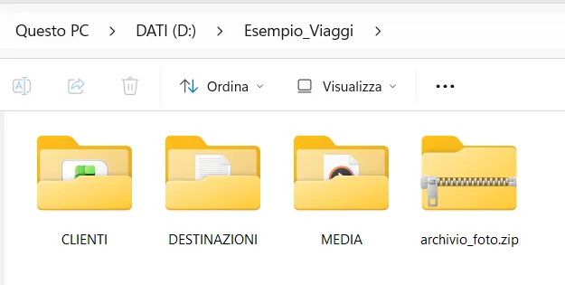
Estensioni visibili: archivio_foto.zip è chiaramente un archivio
Caratteri vietati
Windows non accetta questi nove caratteri nei nomi di file e cartelle, perché hanno un significato speciale (per esempio \ separa le cartelle nel percorso):
Le buone regole per i nomi
- Niente spazi: usa il trattino basso
_.relazione_finale.docxinvece direlazione finale.docx. Gli spazi funzionano in Windows, ma creano problemi quando il file viaggia (email, siti, piattaforme). - Niente lettere accentate:
cittainvece dicittà, per lo stesso motivo. - Nomi che dicono cosa c'è dentro:
preventivo_Rossi.docx, nondocumento1.docx. - Se il file va consegnato, mettici il tuo nome:
RossiMario_relazione.docx.
Con le estensioni nascoste, se rinomini un file di testo scrivendo dati.txt, Windows aggiunge la sua estensione invisibile e il nome vero diventa dati.txt.txt. Sembra giusto, ma non lo è. Soluzione: mostra sempre le estensioni (sezione 3).
Rinominare non vuol dire convertire
Cambiare l'estensione non trasforma il file: cambia solo l'etichetta. Una foto .jpg rinominata in .png resta un JPG con l'etichetta sbagliata; rinominata in .foto diventa un file che nessun programma sa aprire. Per questo Windows avvisa:
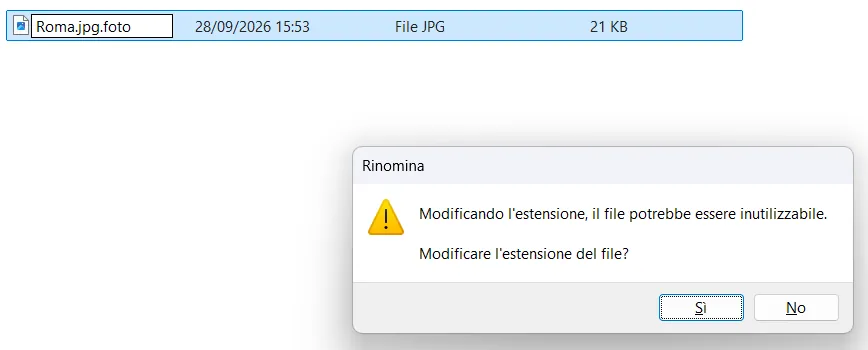
Se compare questo avviso e non sai esattamente cosa stai facendo, rispondi No
Per cambiare davvero formato si apre il file con un programma adatto e si usa Salva con nome scegliendo il nuovo tipo (sezione 6).
Operazioni su file e cartelle
Quasi tutte le operazioni partono dal tasto destro del mouse: su uno spazio vuoto per creare qualcosa di nuovo, su un file o una cartella per agire su quell'elemento.
➕ Creare una cartella o un file
- Entra nella cartella dove vuoi creare il nuovo elemento.
- Tasto destro su uno spazio vuoto → Nuovo.
- Scegli Cartella oppure il tipo di file (per esempio Documento di testo).
- Scrivi il nome e premi Invio.
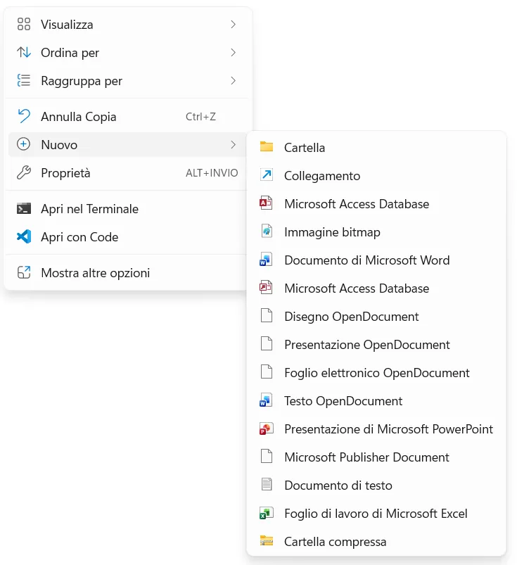
Il sottomenu Nuovo. Scorciatoia per una nuova cartella: Ctrl+Maiusc+N
Quando crei o rinomini un file, Windows seleziona solo il nome e lascia fuori l'estensione: puoi scrivere senza paura di cancellarla.
🖱️ Il menu del tasto destro su un file
In Windows 11 il menu ha in alto una fila di icone con le operazioni più comuni: Taglia, Copia, Rinomina, Condividi, Elimina. Sotto trovi le altre voci; in fondo, Mostra altre opzioni apre il menu classico, più lungo (anche con Maiusc+F10).
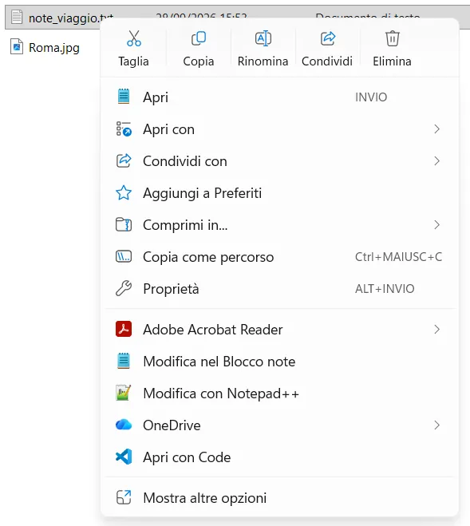
Menu di Windows 11
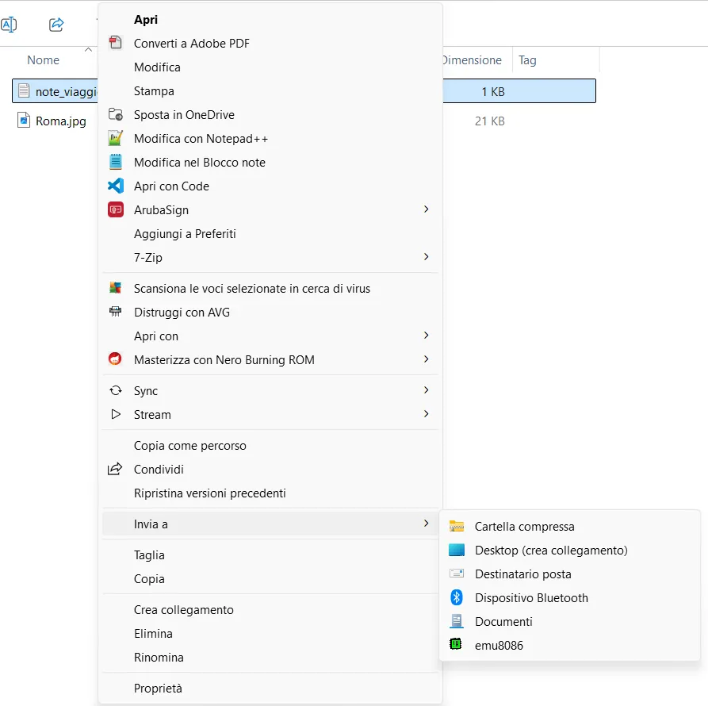
Mostra altre opzioni: il menu classico
Il menu sul tuo computer può avere voci diverse: dipende dai programmi installati. Le voci importanti (Taglia, Copia, Rinomina, Elimina) ci sono sempre.
✏️ Rinominare
- Seleziona il file con un clic.
- Premi F2 (oppure l'icona Rinomina nel menu).
- Scrivi il nuovo nome e premi Invio. Per annullare premi Esc.
Dopo F2 premi Home (o ↖): il cursore va all'inizio del nome e puoi scrivere, per esempio, RossiMario_ senza riscrivere tutto.
📋 Copiare e spostare
Copiare = l'originale resta
Seleziona → Ctrl+C → vai nella cartella di destinazione → Ctrl+V.Alla fine il file esiste in due posti.
Spostare = l'originale sparisce
Seleziona → Ctrl+X (taglia) → vai nella cartella di destinazione → Ctrl+V.Alla fine il file esiste in un solo posto, quello nuovo.
Trascinare con il mouse è più veloce, ma il risultato dipende da dove vai:
- trascini nella stessa unità (da una cartella di C: a un'altra di C:) → il file viene spostato;
- trascini su un'altra unità (da C: alla chiavetta USB) → il file viene copiato.
Se trascini tenendo premuto il tasto destro, al rilascio Windows ti chiede cosa fare: Copia qui o Sposta qui. È il modo più sicuro.
Se incolli un file nella stessa cartella da cui l'hai copiato, Windows crea Roma - Copia.jpg. Se invece nella destinazione c'è già un file con lo stesso nome, ti chiede cosa fare:
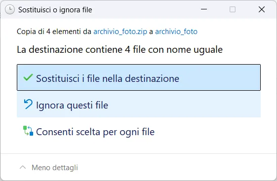
| Scelta | Cosa succede |
|---|---|
| Sostituisci i file nella destinazione | I file vecchi vengono sovrascritti e persi |
| Ignora questi file | Restano i file vecchi, quelli nuovi non vengono copiati |
| Consenti scelta per ogni file | Decidi tu, file per file, confrontando data e dimensione |
🗑️ Eliminare
- Seleziona e premi Canc: il file va nel Cestino, da cui puoi ancora recuperarlo.
- Maiusc+Canc elimina definitivamente, senza passare dal Cestino.
- Hai sbagliato qualcosa? Ctrl+Z annulla l'ultima operazione (eliminazione, spostamento, rinomina).
I file eliminati da una chiavetta USB o da una cartella di rete non vanno nel Cestino: spariscono subito. Pensaci due volte.
☑️ Selezionare più elementi
| Per selezionare… | Fai così |
|---|---|
| Elementi sparsi | Tieni premuto Ctrl e clicca ciascun elemento |
| Elementi consecutivi | Clicca il primo, tieni premuto Maiusc e clicca l'ultimo |
| Elementi vicini, con il mouse | Tieni premuto il tasto sinistro in uno spazio vuoto e trascina: compare un rettangolo azzurro e tutto ciò che tocca viene selezionato |
| Tutto il contenuto della cartella | Ctrl+A |
| Togliere un elemento dalla selezione | Ctrl + clic sull'elemento |
Dopo aver selezionato più elementi puoi copiarli, spostarli o eliminarli tutti insieme.
Salvare un file
Salva o Salva con nome?
Salva — Ctrl+S
Aggiorna il file che hai aperto, con lo stesso nome e nello stesso posto. La versione precedente viene sostituita.Salva con nome — Ctrl+Maiusc+S
Crea un nuovo file: scegli tu cartella, nome e tipo. Il file originale resta com'era. In Word si usa anche F12.La prima volta che salvi un documento nuovo, anche "Salva" apre la finestra di Salva con nome, perché il file non ha ancora un nome né un posto.
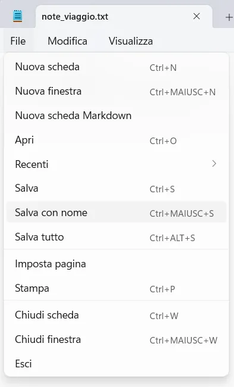
Blocco note: File → Salva con nome
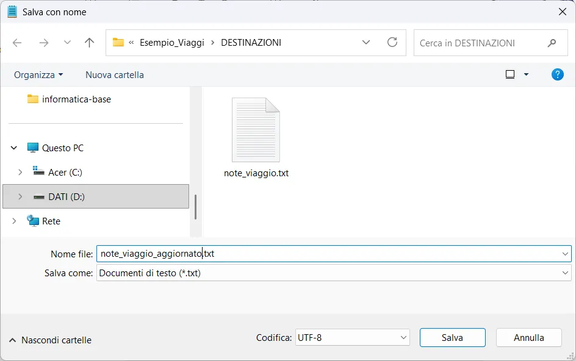
La finestra di salvataggio
La finestra di salvataggio è un piccolo Esplora file. Segui sempre questo ordine:
- Dove: scegli la cartella dal riquadro a sinistra o dalla barra degli indirizzi. Controlla che sia quella giusta prima di continuare.
- Nome file: scrivi un nome che rispetta le buone regole della sezione 4.
- Salva come: il tipo di file. Qui si sceglie il formato, per esempio PDF invece di Word.
- Clicca Salva.
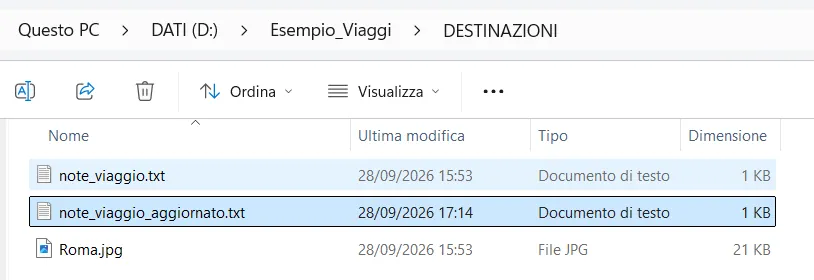
Il risultato: note_viaggio_aggiornato.txt è un file nuovo, e note_viaggio.txt è ancora lì, invariato
Quando scarichi qualcosa da Internet o da una piattaforma come Classroom, il browser lo mette di solito nella cartella Download (in Esplora file la trovi nel riquadro a sinistra, sotto Home). È una cartella di passaggio: sposta i file dove devono stare, altrimenti in poche settimane non ritrovi più niente.
Salvare uno screenshot
Premi ⊞+Maiusc+S: lo schermo si scurisce e compare la barra dello Strumento di cattura.
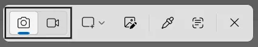
- Scegli la modalità dal menu a tendina (rettangolo, finestra, schermo intero) e seleziona l'area.
- L'immagine finisce negli appunti: incollala con Ctrl+V dove ti serve (Paint, Word, una email).
- Per averla come file: in Paint incolla e poi File → Salva con nome, scegliendo il formato PNG.
⊞+Stamp cattura tutto lo schermo e salva subito il file in Immagini › Screenshot.
Archivi ZIP
Un file .zip è un archivio: un unico file che ne contiene altri, di solito compressi per occupare meno spazio. Serve per spedire o consegnare tante cose insieme: invece di allegare 15 file, se ne allega uno.
Estrarre un archivio
- Tasto destro sul file ZIP → Estrai tutto…
- Controlla la destinazione proposta: di solito una nuova cartella con lo stesso nome dell'archivio. Clicca Estrai.
- Lavora sui file della cartella estratta.
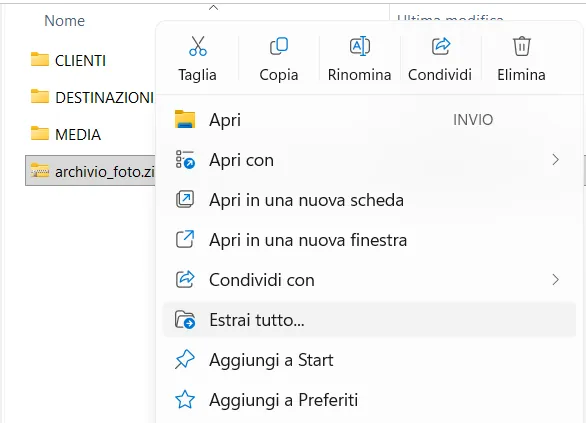
1 · Estrai tutto…
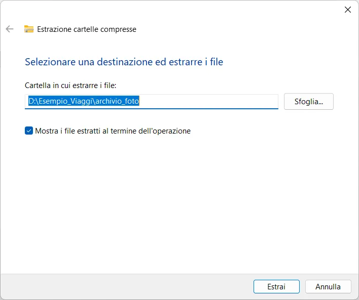
2 · Destinazione ed Estrai
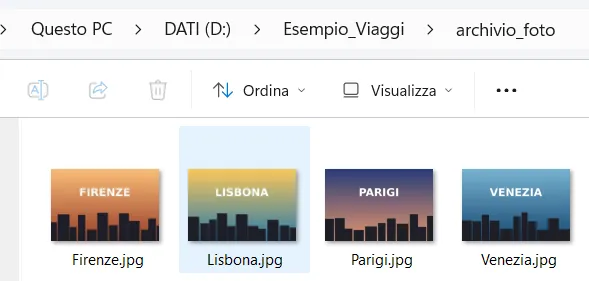
3 · La nuova cartella archivio_foto con le 4 foto
Con un doppio clic lo ZIP si apre come se fosse una cartella, ma non lo è: i file che apri da lì sono copie temporanee e le modifiche possono andare perse. Prima estrai, poi lavora.
Se estrai due volte lo stesso archivio nella stessa cartella, Windows trova file con nomi uguali e mostra la finestra Sostituisci o ignora file che hai visto nella sezione 5.
Creare un archivio
- Tasto destro sulla cartella da comprimere (o su più file selezionati).
- Comprimi in… → File ZIP. In alternativa, dal menu classico: Invia a → Cartella compressa.
- Compare un file
.zipcon lo stesso nome, già selezionato: se serve, rinominalo subito.
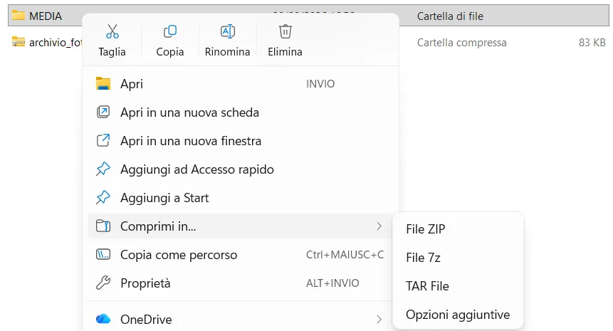
Comprimi in → File ZIP (i formati 7z e TAR sono alternative meno diffuse)
Se devi consegnare una cartella con tutta la sua struttura, fai tasto destro sulla cartella stessa. Se selezioni i file dentro, lo ZIP conterrà i file sparsi, senza la cartella che li organizza.
Laboratorio guidato
Sei stagista in un'agenzia viaggi. Il collega ti ha lasciato una cartella con dodici file alla rinfusa: il tuo compito è organizzarli, rinominarli, crearne qualcuno nuovo e consegnare tutto in un archivio ZIP. Alla fine lo strumento in fondo alla pagina controlla il tuo lavoro.
Nei passi seguenti CognomeNome va sostituito con il tuo cognome e nome attaccati, senza spazi né accenti: per esempio RossiMario. Spunta ogni passo quando l'hai completato.
-
Estrai il materiale
Tasto destro su
laboratorio-file-system.zip→ Estrai tutto. Lavorerai sulla cartella estrattamateriale_laboratorio, non dentro lo ZIP. -
Mostra le estensioni
Visualizza → Mostra → Estensioni nomi file. Se c'è già la spunta, passa oltre.
-
Crea la struttura delle cartelle
Sul Desktop o in Documenti crea la cartella
VIAGGI_CognomeNomee, dentro, queste sottocartelle:VIAGGI_CognomeNome ├── CLIENTI │ ├── PREVENTIVI │ └── CONTRATTI ├── DESTINAZIONI │ ├── EUROPA │ └── MONDO ├── MEDIA │ ├── FOTO │ ├── VIDEO │ └── AUDIO └── VARIE
-
Rinomina tutti i file
In
materiale_laboratorioaggiungiCognomeNome_all'inizio del nome di ogni file:guida_Tokyo.txtdiventaRossiMario_guida_Tokyo.txt. Trucco: F2 e poi Home. -
Sposta ogni file nella sua cartella
File (dopo il prefisso) Cartella …preventivo_Bianchi.docx,…preventivo_Verdi.docxCLIENTI › PREVENTIVI …contratto_Bianchi.docxCLIENTI › CONTRATTI …guida_Parigi.txtDESTINAZIONI › EUROPA …guida_Tokyo.txtDESTINAZIONI › MONDO …Parigi.jpg,…Tokyo.jpgMEDIA › FOTO …spot_estate.mp4MEDIA › VIDEO …jingle_agenzia.mp3MEDIA › AUDIO i 2 file che non appartengono a nessuna categoria VARIE Usa Taglia e Incolla (o il trascinamento): alla fine
materiale_laboratoriodeve essere vuota. -
Crea un nuovo file di testo
In DESTINAZIONI › EUROPA: tasto destro → Nuovo → Documento di testo, chiamalo
CognomeNome_guida_Lisbona.txt. Aprilo e scrivi almeno due consigli di viaggio. Salva con Ctrl+S. -
Crea una revisione
Sempre in EUROPA copia
CognomeNome_guida_Parigi.txte incollalo nella stessa cartella. Rinomina la copia inREVISIONE_CognomeNome_guida_Parigi.txt, aprila e aggiungi in cima una riga con il tuo nome e cognome. Salva. -
Fai uno screenshot
Apri la cartella
VIAGGI_CognomeNomein Esplora file, premi ⊞+Maiusc+S e cattura la finestra. Apri Paint, incolla con Ctrl+V e salva comeCognomeNome_screenshot.pngin MEDIA › FOTO. -
Comprimi e controlla
Tasto destro sulla cartella
VIAGGI_CognomeNome→ Comprimi in → File ZIP. OtterraiVIAGGI_CognomeNome.zip: caricalo nello strumento qui sotto.
🔍 Controlla il tuo ZIP
Scrivi il prefisso che hai usato e scegli il file VIAGGI_CognomeNome.zip. Lo strumento legge l'elenco dei file contenuti e ti dice cosa è corretto e cosa manca.
Il file viene letto solo dal tuo browser: non viene caricato su nessun server.
Cartella principale con il nome sbagliato · file non rinominati · doppia estensione (.txt.txt) · file nella cartella sbagliata · ZIP creato selezionando i file invece della cartella · file nuovi lasciati vuoti.